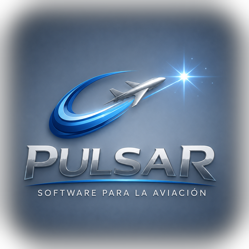

Software para la aviación, hecho desde la operación.
Pulsar es un equipo de tecnología y operación con base en Argentina. AeroClima es nuestro producto para la aviación regional de LATAM.
Acercar la meteorología aeronáutica a quien decide.
Construimos AeroClima con asesoría directa de profesionales en ejercicio de la meteorología aeronáutica y el control de tránsito aéreo, validando cada función contra el trabajo real de un turno — no contra supuestos de oficina.
Creemos que la tecnología no tiene que reemplazar el criterio de quien opera: tiene que darle mejor información, más rápido y en lenguaje claro. El producto se encuentra en desarrollo activo.

Principios que guían el producto.
El kernel decide, la IA explica
Las decisiones de seguridad las toma un motor determinista y auditable. La IA traduce y comunica, nunca decide por su cuenta.
Se suma, no se impone
AeroClima se enchufa a lo que el aeropuerto ya tiene. Sin reemplazos, sin migraciones, sin obra.
Construido con gente de torre
Cada función se valida con perfiles operativos en ejercicio. La realidad del turno manda sobre la teoría.
Pensado para la región
Diseñado para la escala, el presupuesto y las fuentes oficiales de los aeropuertos regionales de LATAM.
Las personas detrás de AeroClima.
Las fotos del equipo se incorporarán próximamente.
Conversemos sobre tu aeropuerto.
Estamos abiertos a conocer tu operación y mostrarte cómo AeroClima podría ayudar.
Ponete en contacto →